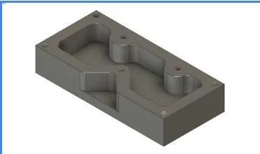
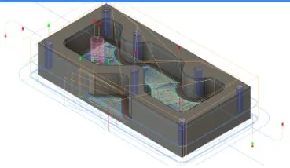

Titans of CNC 1M
CTE Engineering Pathway — Pacific Grove High School



Multi-feature aluminum part from the Titans of CNC program. Involved multiple setups and tool changes to produce the complex pocket geometry.
Process
- CAD modeled in Fusion 360
- CAM toolpaths generated in Fusion 360
- Machined on Tormach 770 CNC mill